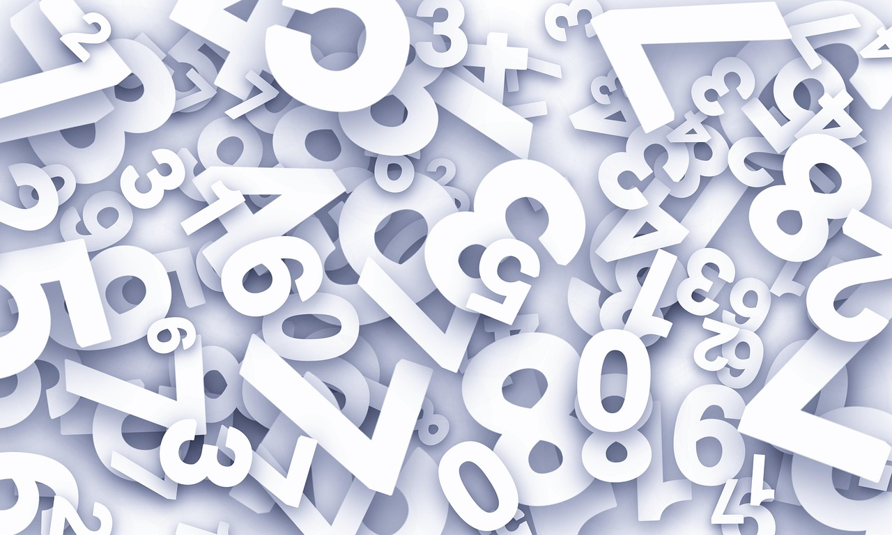

Wertungssystem bis Ende 2019
Jede Nationalmannschaft oder Mannschaft generell hat eine gewisse Anzahl Punkte, wie im Fussball beispielsweise bei der EM. Die Anzahl der vergebenen Punkte richtete sich bis Ende 2019 nach der Bedeutung eines Wettbewerbs. Wichtigere Wettbewerbe und jüngere Resultate wurden stärker gewichtet, um das aktuelle Leistungsvermögen einer Mannschaft darzustellen.
Gemäss dem Beschluss des Board of Administration der FIVB (Fédération Internationale de Volleyball / Internationaler Volleyballverband) wurden die Punkte wie folgt verteilt:
- Olympische Spiele: Ergebnisse wurden vier Jahre lang berücksichtigt und jedes Jahr um 25 % reduziert. Der Olympiasieger erhielt 100 Punkte, die nächsten Teams 90, 80 und 70 Punkte. Für Platz 5–8 gab es 50 Punkte, Platz 9–10 je 30 Punkte, Platz 11–12 je 20 Punkte.
- Weltmeisterschaft: Ebenfalls vier Jahre lang mit Reduzierung um 25 % pro Jahr. Die besten vier Teams erhielten 100–70 Punkte, Platz 5–12 zwischen 62 und 30 Punkte, Plätze 13–24 zwischen 25 und 20 Punkte.
- World Cup: Ergebnisse vier Jahre lang, ab dem zweiten Jahr -25 % pro Jahr. Platz 1–4: 100–70 Punkte, Platz 5–8: 50–25 Punkte, Platz 9–12: je 5 Punkte.
- Kontinentale Meisterschaften (z. B. Europameisterschaft): Ergebnisse zwei Jahre lang, im zweiten Jahr um 50 % reduziert. Keine einheitliche Punktwertung.
- Weltliga & World Grand Prix: Ein Jahr gültig. Die acht besten Teams erhielten 50–12 Punkte, weitere Mannschaften 10–1 Punkte, Platz 17–20 je nach Wettbewerb 2 oder 1 Punkt.
- Punkte gab es auch für die besten nichtqualifizierten Teams: 3 für die beste, 2 für die zweitbeste und je 1 für die nächsten vier Teams.
